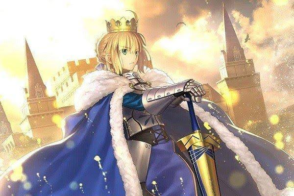
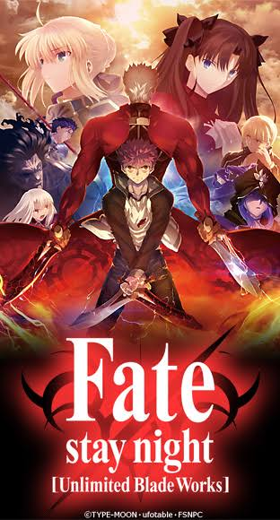
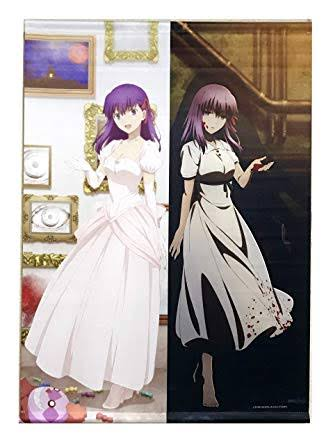

FateStayNight
FateStayNightは2004年にtype-moonから発売された同人ゲームである。FateStayNightには3つのルートが存在しており、今ではゲームの他にアプリ、アニメ、ノベル、映画などと言った様々なコンテンツとして多くのユーザーに楽しまれている。3月には3つめのルートのHeaven's Feelの最終章が放映される。
あらすじ 日本のとある地方都市「冬木市」に数10年に1度現れるとされる、持ち主のあらゆる願いを叶える「聖杯」。7人の魔術師（マスター）は7騎の使い魔（サーヴァント）と契約し、聖杯を巡る抗争「聖杯戦争」に臨む。聖杯を手にできるのはただ一組、ゆえに彼らは最後の一組となるまで互いに殺し合う。ただし、この闘いも魔術も一般人には厳に秘匿されていた。
  
製作者：原昌大
トップへ戻る
page2へ
page3へ